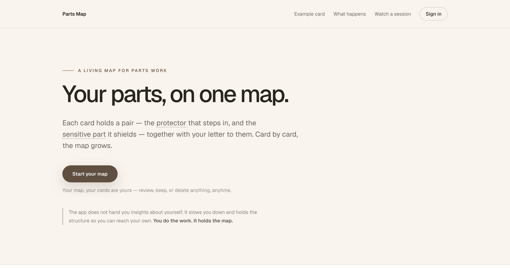
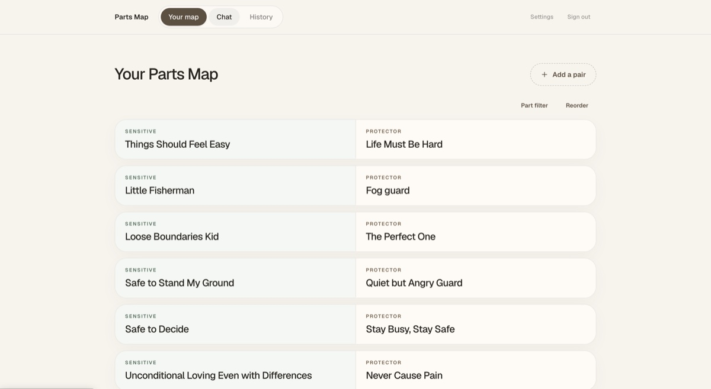
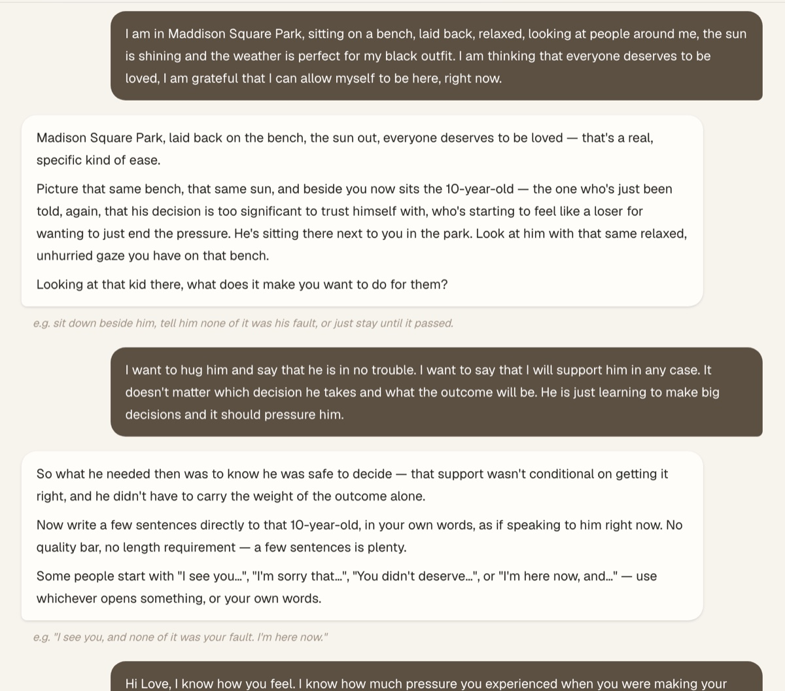

— you probably found me through Parts Map
This is my corner of the internet: the story behind the app, and a way to say hello.
When I finished Sarah Baldwin's You Make Sense course, I realised my work with my nervous system was only beginning. One of the main things I was doing was working with my parts. The problems I ran into: I had no place to write them down, and no clear questions to ask myself when I tried to describe a part after a hard moment.
So I thought modern technology could help. It occurred to me that the questions could come one at a time, the way they did in the course — so that in hard moments I could draw a full picture of my parts. The concept worked. I put together a first working version and started making real progress in my parts work.
"A tool that helps me understand and have compassion for my inner parts…"
A few months after that first idea, I built an app that holds the whole map of my parts, lets me record disconfirming evidence, and add photos of my parts. I'm deeply grateful I could give this much time and love to a tool that helps me understand and have compassion for my inner parts.



I live in Vilnius. For years I did conversion and product work at companies like NordVPN and Showmax — until I realised I wanted to build things that fill me up. I quit to find out what those are.
The You Make Sense course was a big step in that direction: it gave me new ways to understand myself, express myself, and help other people do the same. Parts Map grew out of that season — a builder's answer to an inner question.
Have feedback on Parts Map? Write to me — a bug, an idea, or just how you're using it. Anything else works too; I like getting mail.